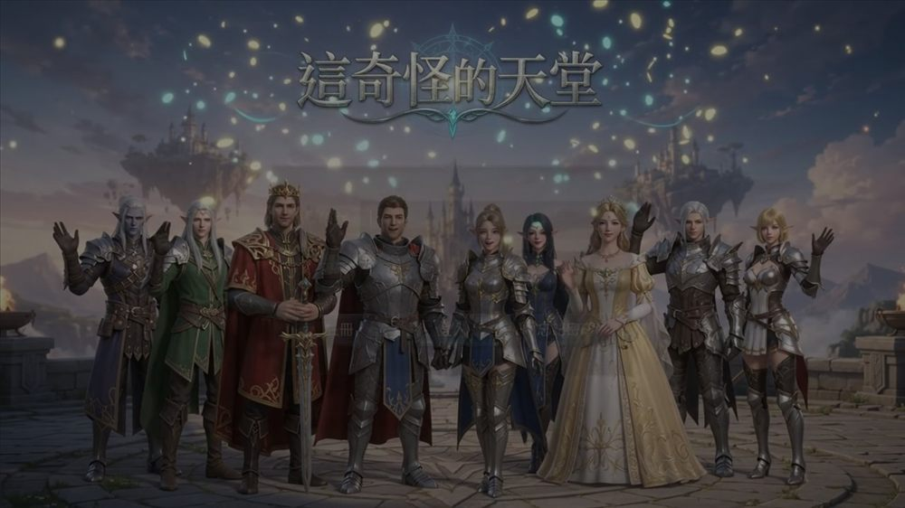

LINEAGE WEB · PLAYER GUIDE
從說話之島出發，
一路打到傲慢之塔頂。
新手怎麼開局、去哪裡練功、技能書打哪隻怪、BOSS 什麼時候重生——攻略帶你走流程，小百科讓你查到底。

攻略
🧙
開始遊戲與職業
創角擲骰、八大職業特色、新手背包怎麼用。
⚙️輔助系統與掛機
自動喝水、自動買補給、技能自動放、離線掛機。
🗺練功路線
每個等級段推薦的狩獵場與傳送費用。
📜等級任務
八職業 15／30／45／50 級任務與獎勵。
🧸收藏養成
變身卡、魔法娃娃、武魂、BOSS 附魔怎麼拿。
👑BOSS 一覽
所有 BOSS 的等級、地點與重生時間。
小百科
⚔️
道具
武器、防具、道具的能力與取得方式（掉落、商店、製作）。
🐾怪物
等級、HP、經驗、出沒地點與完整掉落表。
🏰地圖與狩獵場
每張地圖有哪些怪、BOSS 與傳送費用。
✨技能
各職業學習等級、技能書掉落怪物。
🔨製作
所有可製作的配方、材料與成功率。
🎴變身卡・娃娃・武魂
能力、稀有度、抽取機率與進化路線。
只收錄目前遊戲裡拿得到的內容；資料更新：。